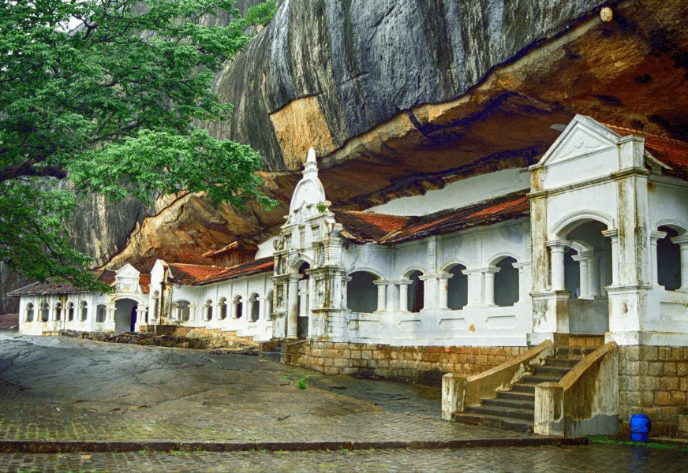
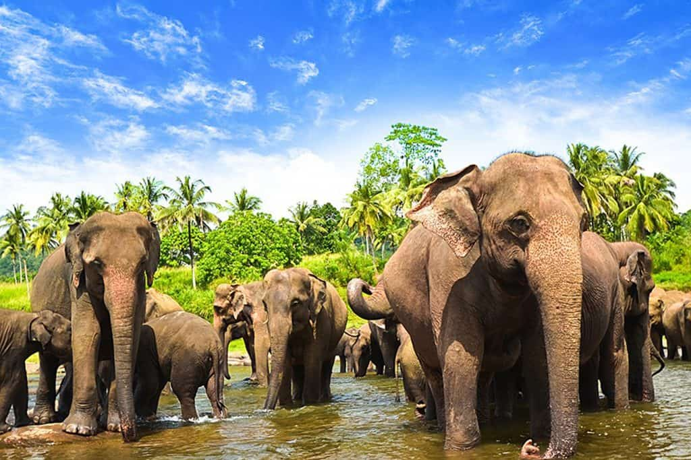
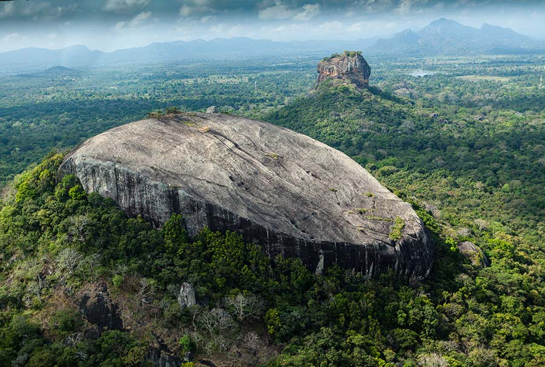
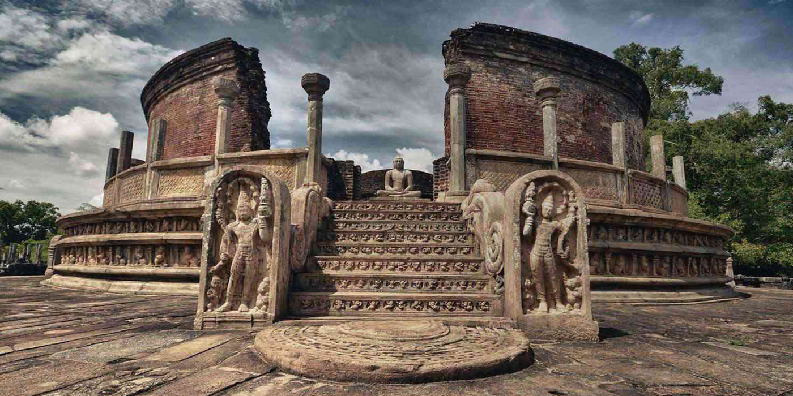

Dambulla Cave Temple
A sacred pilgrimage site with magnificent Buddhist mural paintings and statues.

Minneriya National Park
Famous for the "Gathering" of wild elephants and rich biodiversity.

Pidurangala Rock
An alternative hike offering breathtaking views of Sigiriya from the summit.

Polonnaruwa Ancient City
A UNESCO World Heritage Site featuring ancient ruins and temples of a former kingdom.